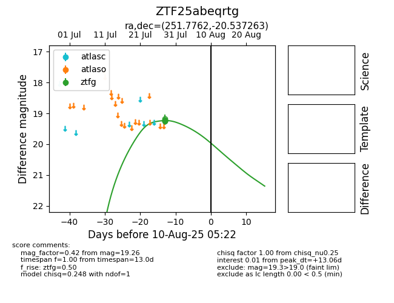

Target ZTF25abeqrtg at 2025-08-10 05:22, see:
FINK: fink-portal.org/ZTF25abeqrtg
Lasair: lasair-ztf.lsst.ac.uk/objects/ZTF25abeqrtg
ALeRCE: alerce.online/object/ZTF25abeqrtg
alt names
ZTF25abeqrtg (ztf,fink)
coordinates:
equatorial (ra, dec) = (251.7762,-20.53726)
galactic (l, b) = (359.3399,+15.68312)
photometry
last ztfg=19.26
5 ztfg detections
